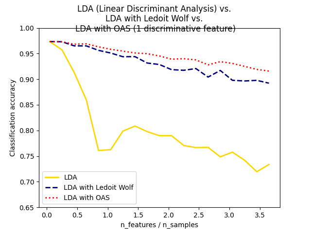

Note
Go to the end to download the full example code or to run this example in your browser via Binder
Normal, Ledoit-Wolf and OAS Linear Discriminant Analysis for classification¶
This example illustrates how the Ledoit-Wolf and Oracle Shrinkage Approximating (OAS) estimators of covariance can improve classification.
import matplotlib.pyplot as plt
import numpy as np
from sklearn.covariance import OAS
from sklearn.datasets import make_blobs
from sklearn.discriminant_analysis import LinearDiscriminantAnalysis
n_train = 20 # samples for training
n_test = 200 # samples for testing
n_averages = 50 # how often to repeat classification
n_features_max = 75 # maximum number of features
step = 4 # step size for the calculation
def generate_data(n_samples, n_features):
"""Generate random blob-ish data with noisy features.
This returns an array of input data with shape `(n_samples, n_features)`
and an array of `n_samples` target labels.
Only one feature contains discriminative information, the other features
contain only noise.
"""
X, y = make_blobs(n_samples=n_samples, n_features=1, centers=[[-2], [2]])
# add non-discriminative features
if n_features > 1:
X = np.hstack([X, np.random.randn(n_samples, n_features - 1)])
return X, y
acc_clf1, acc_clf2, acc_clf3 = [], [], []
n_features_range = range(1, n_features_max + 1, step)
for n_features in n_features_range:
score_clf1, score_clf2, score_clf3 = 0, 0, 0
for _ in range(n_averages):
X, y = generate_data(n_train, n_features)
clf1 = LinearDiscriminantAnalysis(solver="lsqr", shrinkage=None).fit(X, y)
clf2 = LinearDiscriminantAnalysis(solver="lsqr", shrinkage="auto").fit(X, y)
oa = OAS(store_precision=False, assume_centered=False)
clf3 = LinearDiscriminantAnalysis(solver="lsqr", covariance_estimator=oa).fit(
X, y
)
X, y = generate_data(n_test, n_features)
score_clf1 += clf1.score(X, y)
score_clf2 += clf2.score(X, y)
score_clf3 += clf3.score(X, y)
acc_clf1.append(score_clf1 / n_averages)
acc_clf2.append(score_clf2 / n_averages)
acc_clf3.append(score_clf3 / n_averages)
features_samples_ratio = np.array(n_features_range) / n_train
plt.plot(
features_samples_ratio,
acc_clf1,
linewidth=2,
label="LDA",
color="gold",
linestyle="solid",
)
plt.plot(
features_samples_ratio,
acc_clf2,
linewidth=2,
label="LDA with Ledoit Wolf",
color="navy",
linestyle="dashed",
)
plt.plot(
features_samples_ratio,
acc_clf3,
linewidth=2,
label="LDA with OAS",
color="red",
linestyle="dotted",
)
plt.xlabel("n_features / n_samples")
plt.ylabel("Classification accuracy")
plt.legend(loc="lower left")
plt.ylim((0.65, 1.0))
plt.suptitle(
"LDA (Linear Discriminant Analysis) vs. "
+ "\n"
+ "LDA with Ledoit Wolf vs. "
+ "\n"
+ "LDA with OAS (1 discriminative feature)"
)
plt.show()
Total running time of the script: (0 minutes 5.030 seconds)